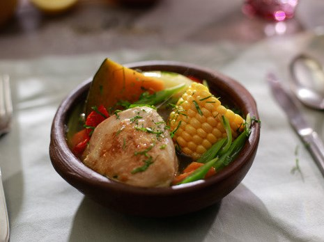

Los porotos granados, tal como los conocemos, tiene su origen en la cocina campesina del la zona centro-sur de Chile, su nombre proviene de la presentación o estado de madurez que tiene el capi (vaina) del poroto al momento de cosecharlo.
La cazuela de ave, tal como la conocemos, tiene su origen en la zona central de Chile, remontando a los tiempo de la conquista española, por la mixtura de sus ingredientes, tanto los de nuestra tierra, como la papa, el zapallo y la carne de vacuno, como los ingredientes del viejo continente, como el trigo y especias diversas, siendo un infaltable en la mesa de los chilenos.
En enero, ha salido elegido como la receta del mes, el pastel de choclo, de acuerdo a las votaciones de nuestros seguidores de redes sociales, a lo largo del territorio nacional.